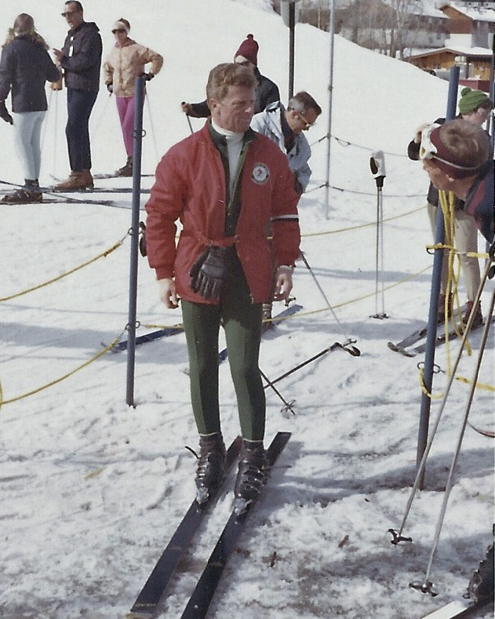

Skiing in Colorado is thought to be around long before Colorado even became a State in 1876. But due to Colorados remarkable geography and positioning among the Rocky Mountains, it provides great mountains for world class skiing! If you're familiar with the X-Games then you would also be pleased to hear that in Aspen, Colorado the X-Games are held every winter.
